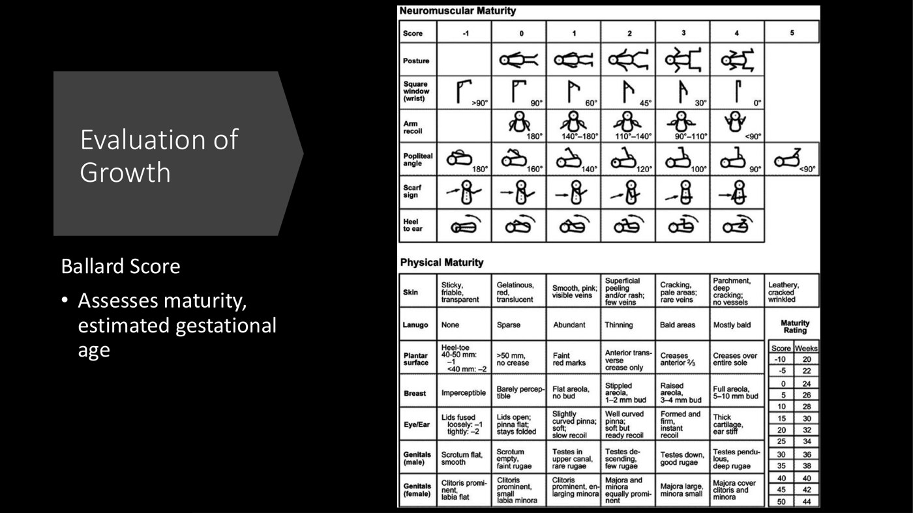
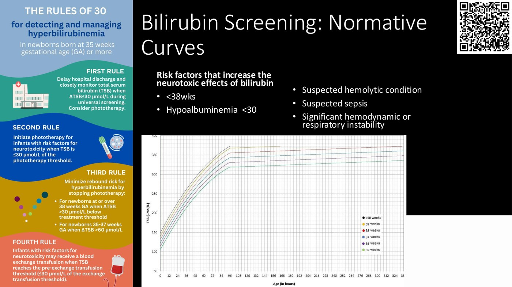
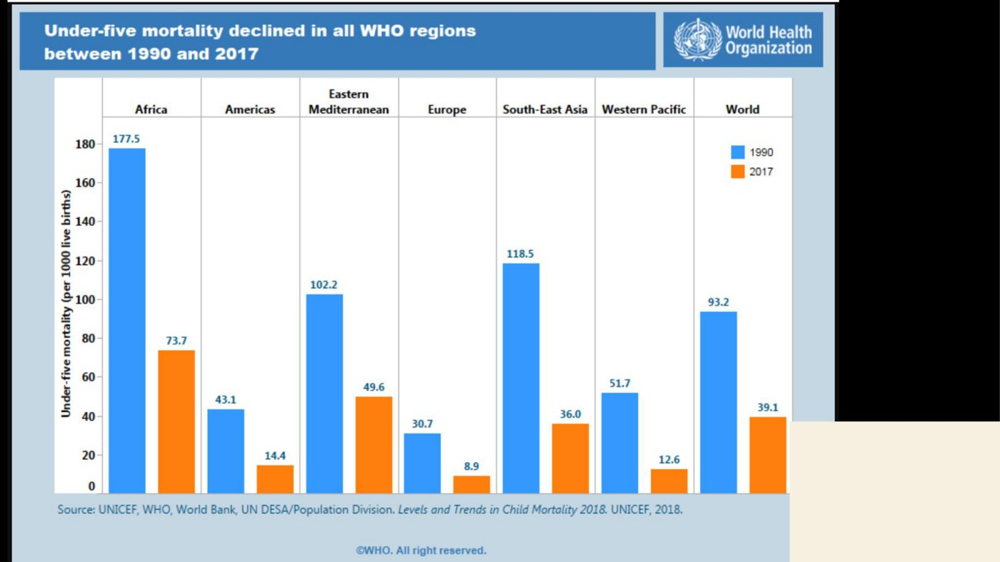
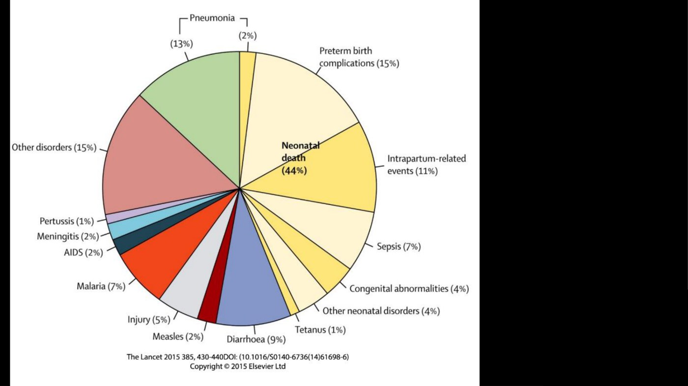
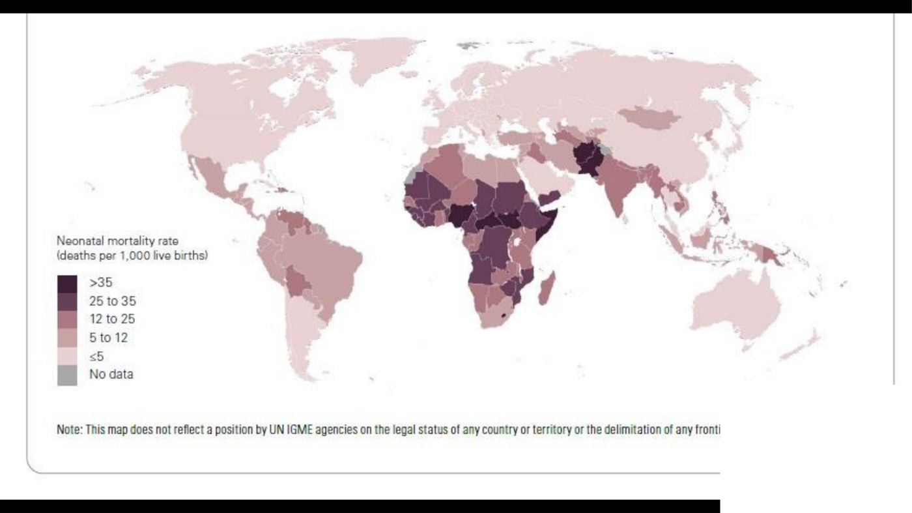

Approach to Neonatal Care
- APGAR at 1, 5 and 10 minutes: Appearance, Pulse, Grimace, Activity, Respiration, 0–2 each, out of 10. It is scored afterwards, not used to run the resuscitation. The heart-rate target is > 100.
- Every newborn gets a head-to-toe exam within 24 h: dysmorphic features, a patent GI tract, the heart (no murmur doesn't rule out heart disease), tone (can it feed?), and urine and meconium passed before discharge. Plot weight, head circumference and length. The Ballard score estimates gestational age.
- Pink, warm and sweet. Babies lose heat four ways and can't shiver. Dry, wrap, add a hat, heat the room; incubator under 1500 g. Glycogen lasts 8–10 h; gluconeogenesis takes 2–4 days to mature.
- Screen glucose in IDM, LGA (> 90th), SGA (< 10th) and preterm (< 37 wk). “2.6, no more sticks” (3.3 after 72 h). Symptomatic hypoglycemia is an emergency: IV dextrose.
- Bilirubin is screened in everyone at 24–48 h. Jaundice in the first 24 h is always pathological. Untreated, it causes acute bilirubin encephalopathy and kernicterus. Treat with phototherapy (blue light → soluble lumirubin) and the cause; IVIG or exchange transfusion if severe.
Learning Objectives
- Contrast initial resuscitation of a neonate versus an adult.
- Describe the components of the Apgar score.
- List the changes that occur in the heart and lungs after birth.
- Review the components of the newborn exam.
- List indications why a neonate may need extra evaluation or care.
- Model bilirubin physiology and investigation in the first week of life.
- Discuss global perspectives of neonatal care.
Dr. Anita Cheng, neonatologist. Elentra lists 99 minutes: a 41-minute recording, a 48-slide deck, a separate video of a full newborn exam, and three knowledge-check cases (worked through below). The first and third objectives aren't taught in the deck or the recording, so the box below covers them from the neonatal resuscitation guideline and says so.
Birth: What Changes, and Why a Newborn Isn't a Small Adult
Heart and lungs at birth. The first breaths clear the fluid-filled lungs: lung fluid is absorbed through epithelial sodium channels. Inflating the lungs and raising the oxygen level make pulmonary vascular resistance fall, so pulmonary blood flow rises. Left atrial pressure then exceeds right, the foramen ovale closes, and the ductus arteriosus constricts. The fetal circulation switches to the adult one in minutes. (Standard physiology.)
Resuscitation: ventilation first. A newborn who needs help almost always has a breathing problem, not a primary cardiac one, so inflating the lungs is the priority. A rising heart rate is the best sign it's working. Positive-pressure ventilation starts if the baby is apneic, gasping, or HR < 100 in the first minute. Chest compressions come only if HR stays < 60 after 30 s of good ventilation, at 3 compressions : 1 breath (adult CPR is compressions first, 30 : 2). Keep the baby at 36.5–37.5 °C. Delayed cord clamping (> 30 s) is reasonable if no resuscitation is needed. (2020 AHA/AAP neonatal resuscitation guideline, via its AAFP summary.)
The APGAR Score
Developed in 1952 by Dr. Virginia Apgar, an anesthetist. It is scored after the resuscitation, at 1, 5 and 10 minutes, as a record of how the baby transitioned. It doesn't decide what to do.

Knowledge check: score this baby
Centrally pink with blue hands and feet; the nurse counts 12 beats in 6 seconds; grimaces and cries to stimulation; arms and legs flexed; crying regularly.
Appearance 1 · Pulse 2 (12 × 10 = 120/min) · Grimace 2 · Activity 2 · Respiration 2 = 9. A vigorously crying baby usually has HR > 100.
The Newborn Exam
Many neonatal problems are failures to adapt from intrauterine to extrauterine life. 3% of neonates have a major malformation, so every one is examined within 24 hours of birth. The module includes a video of a full exam.
| Look for | Why |
|---|---|
| Dysmorphic features | Clues to a genetic or congenital anomaly, e.g. Down syndrome: epicanthal folds, Brushfield spots, low-set ears, a smooth philtrum, hand findings |
| A non-patent GI tract | A distended abdomen or trouble swallowing. Duodenal atresia is more common in Down syndrome. |
| Cardiac lesions | Appearance and pulses as well as auscultation: a cyanotic heart lesion may have no murmur at first |
| Tone | Feeding well (breast or bottle) is a good surrogate for normal tone |
| Voided urine and passed meconium | Before discharge: shows intake and a patent GI tract |
| Weight, head circumference, length | Plotted on a growth chart (preterm-specific charts exist), then followed by the primary care provider for failure to thrive |

Keeping Them Warm

| Why newborns get cold | What we do |
|---|---|
| From a warm womb to a cold room, naked, wet, with a large surface area | Dry at once (stops evaporation), wrap, hat (the head is a big surface) |
| Little fat: 16% of body weight at 40 wk, only 1% at 27 wk | Preterm: a plastic wrap/bag, a hot resuscitation room |
| Can't shiver; limited metabolic reserve | Incubator under 1500 g (servo-controlled); a radiant warmer on the resuscitation bed |
| Very preterm skin is thin | Humidity ≥ 80% for the most preterm |
Cold stress alone can make a baby sick, including respiratory distress. It also spends glucose, which is the next problem.
Keeping Them Sweet: Hypoglycemia
| Fetus | Newborn |
|---|---|
| Glucose is the main fuel, entirely from the mother. Glycogen synthesis in liver and muscle starts in the late 2nd trimester. Fat is the biggest store. | Plasma glucose is held up by glycogenolysis: a term baby has glycogen for 8–10 hours (colostrum is only a few mL). Then gluconeogenesis, which isn't fully integrated until 2–4 days. |
| Too little substrate | Too much substrate use |
|---|---|
| IUGR / SGA, hypertension in pregnancy, multiple gestation, prematurity: little stored glycogen and fat | Infant of a diabetic mother and LGA: the fetus made extra insulin to match maternal glucose; the cord is cut, the insulin isn't. A transient hyperinsulinemic state. Also hypothermia, sepsis, asphyxia. |
| Who to screen (asymptomatic) | Signs |
|---|---|
| Infants of diabetic mothers · LGA > 90th · SGA < 10th · preterm < 37 wk. Check 2 h after the first feed. | Often none (that's why we screen) · jittery, irritable · lethargic, feeds poorly · can be a sign of sepsis, even in an IDM |
 The numbers. Target 2.6 mmol/L in the first 72 h, 3.3 after. Jitteriness and other neuro signs mean the brain is short of glucose and neurons are being injured. Slide from the deck (CPS position statement).
The numbers. Target 2.6 mmol/L in the first 72 h, 3.3 after. Jitteriness and other neuro signs mean the brain is short of glucose and neurons are being injured. Slide from the deck (CPS position statement).
 The CPS algorithm. Early, frequent feeding → recheck → IV dextrose. “Three strikes”: still low after three checks means an IV. Glucagon if dextrose fails; investigate persistent lows (inborn errors, hormones). Slide from the deck.
The CPS algorithm. Early, frequent feeding → recheck → IV dextrose. “Three strikes”: still low after three checks means an IV. Glucagon if dextrose fails; investigate persistent lows (inborn errors, hormones). Slide from the deck.
Knowledge check
A 37+0 infant of a diabetic mother, 3989 g, now 12 h old: two glucose readings of 2.3. Jittery and can't latch or suck; mother feels she has no milk yet. Next step?
Start IV dextrose and recheck in 30 minutes. This is symptomatic hypoglycemia in a baby who can't feed, so feeding-based options (NG formula, dextrose gel, a lactation consult) are too slow.
Bilirubin in the First Week

| Step | What happens |
|---|---|
| 1. Production | The fetus lives in relative hypoxia, so it has lots of red cells; after birth they break down. Heme → heme oxygenase → biliverdin → biliverdin reductase → bilirubin |
| 2. Transport | Bound to albumin to reach the liver |
| 3. Uptake | Into the hepatocyte via ligandin |
| 4. Conjugation | Glucuronosyltransferase makes it water-soluble. Unconjugated bilirubin can't be excreted. |
| 5. Excretion | Into bile and gut; out in stool (and urine as urobilinogen) |
| 6. Enterohepatic circulation | Some is deconjugated in the gut and comes back for another pass |
Universal screening at 24–48 h of life, transcutaneous (a meter on the forehead) or a blood level. The level is plotted by age in hours: first on the risk nomogram (decides follow-up), then on the phototherapy chart (decides treatment).

| Risk factors for hyperbilirubinemia | Causes |
|---|---|
| Isoimmune hemolytic disease (ABO, Rh, minor antigens) · G6PD deficiency · asphyxia · respiratory distress · lethargy, temperature instability · bruising, cephalohematoma · sepsis · acidosis · prematurity · a sibling who needed phototherapy · East Asian ethnicity | Exaggerated physiological / breastfeeding jaundice (the most common: milk not in, baby dehydrated) · sepsis · hemolysis: isoimmunization (all mothers get ABO and antibody screening), spherocytosis, elliptocytosis, G6PD · cephalohematoma · polycythemia (IUGR, Down syndrome) · drugs that displace bilirubin from albumin (ceftriaxone, sulfas) · breast-milk jaundice (rare) · conjugation disorders |
| Red flags |
|---|
| Jaundice in the first 24 h is always pathological |
| Cord bilirubin > 68 µmol/L · rise > 85 µmol/L/day · total > 340 µmol/L |
| Direct (conjugated) > 30 µmol/L or > 20% of total: a biliary excretion problem |
| Jaundice > 2 weeks in a term baby · an unwell baby |

Why we screen. Bilirubin-induced neurological dysfunction (BIND): acute bilirubin encephalopathy starts as lethargy, hypotonia and a poor suck, then becomes hypertonia with opisthotonos and retrocollis, a high-pitched cry and fever, then seizures and coma. It is life-threatening. Kernicterus is the pathological finding: deep-yellow staining and necrosis of the basal ganglia and brainstem nuclei. It is irreversible and causes cerebral palsy and intellectual disability.
| Approach | |
|---|---|
| History | Feeding (breast or formula, how much, does mom feel a let-down?) and activity · septic risk factors · birth trauma or hypoxia · family history (G6PD, conjugation disorders) |
| Exam | Blanch the nose and look for yellow · jaundice spreads head to toe · colour does not predict the level, especially after phototherapy · weight loss (> 10% suggests poor intake) |
| Investigations | Total and direct bilirubin · DAT · CBC (Hb, smear, reticulocytes) · maternal and baby blood groups and antibodies |
| Treatment | Phototherapy · treat the cause (e.g. sepsis) · IVIG for immune hemolysis · exchange transfusion if very high |

Knowledge check
A healthy 39-week girl, 24 h old, total bilirubin 175, breastfeeding well. Mother G1, O+, antibodies negative, DAT negative.
Plot it on the phototherapy chart's line for babies ≥ 38 weeks with no neurotoxicity risk factors: the threshold at 24 h is 210, so no phototherapy yet (the gap is 35). Repeat the bilirubin in 12–24 h.
Global Perspectives

Under-five mortality fell in every WHO region from 1990 to 2017, but Africa is still about 74 per 1000. Slide from the deck (UNICEF/WHO).
5.4 million children under five die every year; 44% are neonates (first 28 days), about 2.5 million. The big slices: preterm complications, intrapartum events, sepsis. Slide from the deck (Lancet 2015).
Where those deaths happen: sub-Saharan Africa and South Asia. Slide from the deck.Helping Babies Survive (AAP, WHO, USAID): simple, picture-based training for anyone who attends births, including community attendants with no medical training. It comes with a low-cost kit (mannequin, self-inflating bag and mask, stethoscope) and culturally matched materials.
| Course | Focus | Result shown in the deck |
|---|---|---|
| Helping Babies Breathe | The “Golden Minute”: dry, warm, stimulate, bag-mask ventilate within the first minute | 47% fewer early neonatal deaths, 24% fewer stillbirths (babies who looked dead were ventilated) |
| Essential Care for Every Baby | Kangaroo care, breastfeeding | Babies given no breast milk are 7× more likely to die of infection |
| Essential Care for Small Babies | Skin-to-skin care for IUGR and preterm babies | 36% lower mortality in low-birth-weight babies |
| Improving Care for Mothers and Babies | A quality-improvement cycle for the care team | — |
Take-Home Messages
- Every newborn: pink (cardiorespiratory transition), warm, sweet (consider glucose screening).
- Have a systematic approach to respiratory distress, the most common newborn problem.
- Neonatal sepsis is life-threatening and belongs on the list for any sick baby: hypoglycemia, jaundice, temperature instability, poor feeding.
- Simple, targeted education measurably cuts neonatal mortality worldwide.
Built from Dr. Anita Cheng's “Approach to Neonatal Care” module: the 41-minute recording, the 48-slide deck, and the module's three knowledge-check cases. The newborn-exam video isn't transcribed. Slide photographs of babies (dysmorphic features, preterm care, a jaundiced infant) are left out; the brain slice is cropped from the kernicterus slide. Added for these notes and marked: the transition and resuscitation box, from standard physiology and the 2020 AHA/AAP neonatal resuscitation guideline (Aziz et al., Pediatrics 2021;147:e2020038505E; AAFP summary 2021;104:425). Caption corrections: the audio says “about 30%” of neonates have major malformations; the slide says 3%, and the slide is followed. Auto-captions also garbled Ballard as “ballad”, biliverdin as “Billy Verdin”, kernicterus as “chronic gyrus”, opisthotonos as “a vessel tonic” and polycythemia as “polyps”.